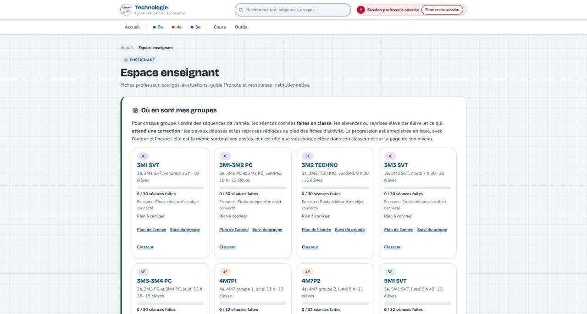
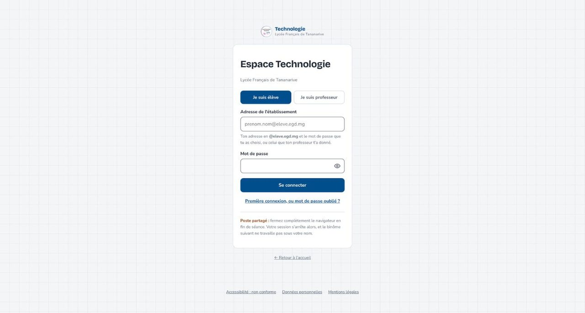
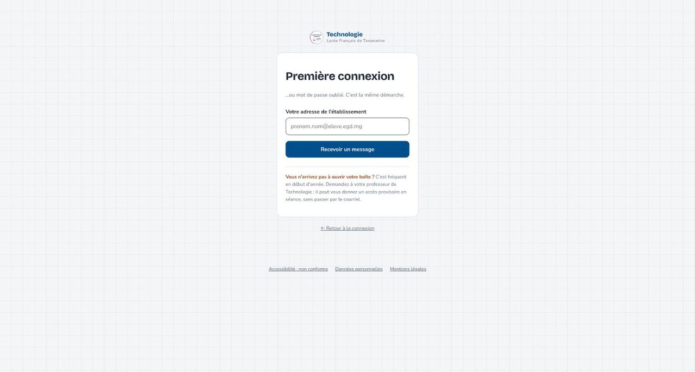
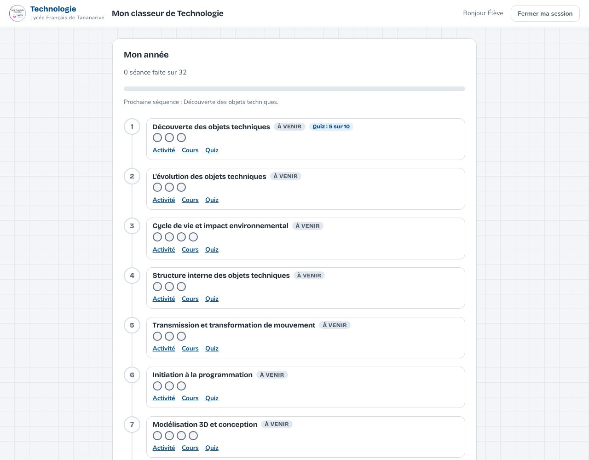
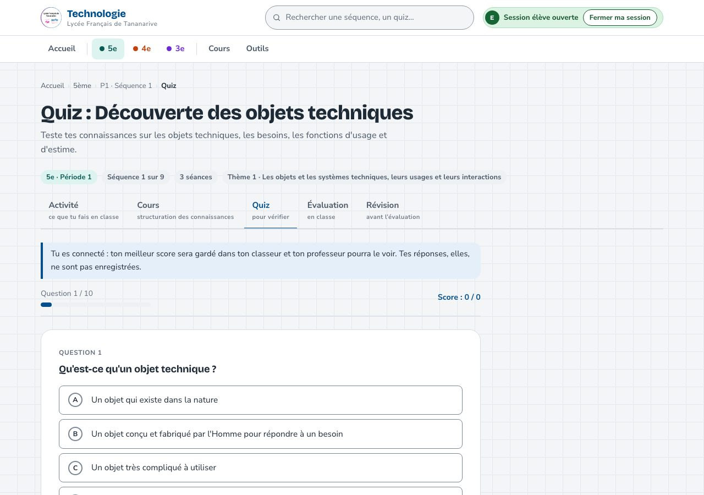
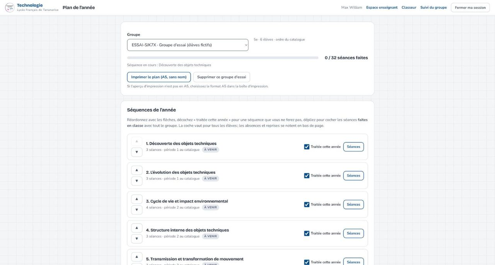
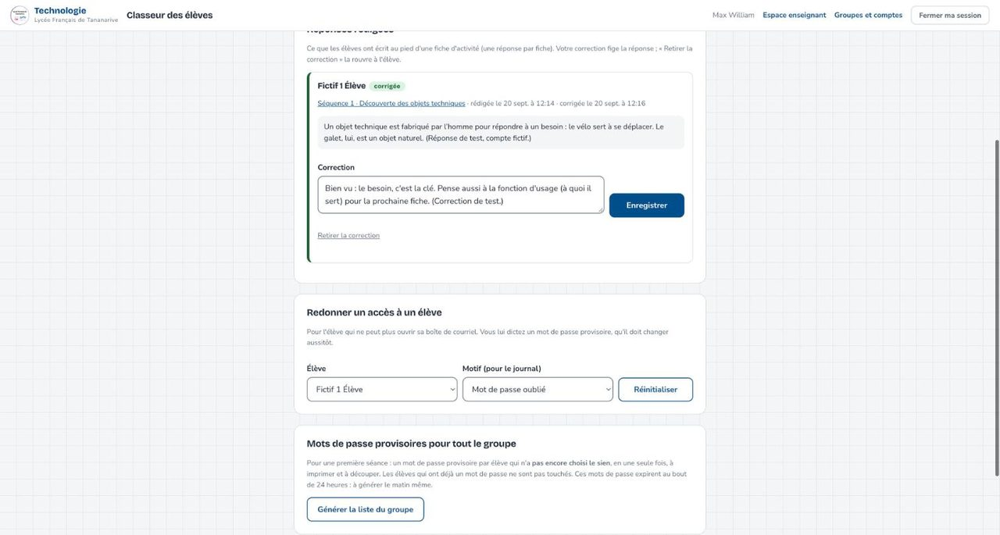
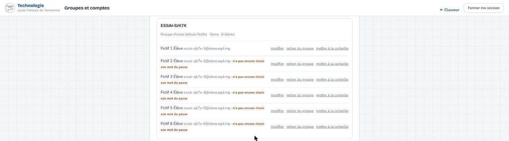
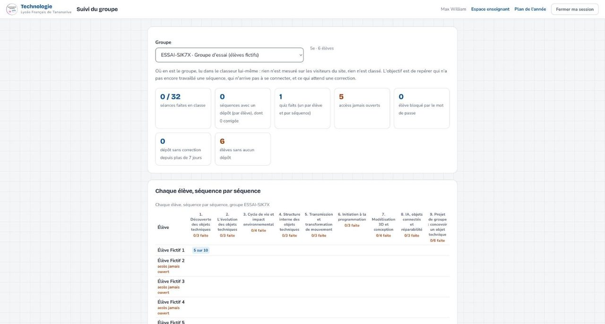

Le site de Technologie en classe
Ce qui change, ce que voit l’élève, ce que vous faites en trois clics, et la première séance pas à pas.
Ce qui a changé depuis le 18 septembre
- Le site
techlft.egd.mgest réservé : sans compte, on ne voit que l’accueil, la page des parents, les progressions par niveau et les pages légales. - Chaque élève a un compte personnel (adresse
@eleve.egd.mg), qui le suit jusqu’en 3e, et ne voit que son niveau. - Les 33 groupes sont déjà remplis d’après l’export EDUKA du 17 septembre (532 élèves) : vous n’importez rien.
- Chaque professeur voit ses groupes, corrige ses élèves, coche ses séances. Le coordonnateur voit tous les groupes pour les comptes, pas les dépôts des collègues.
Un seul geste avant lundi : vérifier que vos groupes sont là, avec le bon effectif.

Se connecter, la première fois
- Page de connexion, « Je suis élève » ou « Je suis professeur » (vous : votre adresse
@egd.mg). - L’élève qui n’a pas encore de mot de passe : « Première connexion », son adresse, « Recevoir un message ». Le courriel arrive en moins d’une minute (expéditeur « Technologie LFT »), le lien vaut 24 heures.
- Il choisit son mot de passe : 12 caractères au moins, sans son nom ni son adresse. Trois mots reliés par des tirets font l’affaire.
Sans boîte de courriel accessible : le mot de passe provisoire (diapositive 7).


Ce que voit l’élève : Mon classeur
- Mon année : les neuf séquences de son niveau, dans l’ordre de votre plan ; la première est « Prochaine séquence ». Rien à activer.
- Pour chaque séquence : Activité, Cours, Quiz, les pastilles des séances (cochées par vous quand elles sont faites), le badge de fin de séquence, son meilleur score au quiz.
- Déposer un travail (photo ou PDF), Mes travaux déposés avec vos corrections, Mes réponses rédigées.
- Jamais de note ni de classement : la progression, le badge et le meilleur score, c’est tout.

Sur la fiche : répondre, rendre, s’entraîner
- Au pied de chaque fiche d’activité, « Ma réponse » : une réponse rédigée (4 000 caractères), enregistrée dans votre classeur. Elle reste modifiable jusqu’à votre correction.
- « Rendre mon travail » : photo du cahier ou PDF, réduite avant l’envoi, depuis un poste ou un téléphone.
- Le quiz de la séquence : dix questions, correction immédiate, seul le meilleur score est gardé. L’élève peut recommencer.
- Une fiche d’un autre niveau répond « Pas cette année ».

Votre plan de l’année : cocher après, jamais avant
- Chaque groupe part du plan du catalogue : neuf séquences, toutes « traitées cette année ». Réordonnez avec les flèches, décochez une séquence que vous ne ferez pas.
- Après une séance, « Séances » : cochez la séance faite en classe, pour tout le groupe. C’est ce qui fait avancer la barre et pose le badge de l’élève.
- En bas, élève par élève : absent, à reprendre, rattrapé.
- « Imprimer le plan (A5, sans nom) » pour le cahier.
La coche veut dire « faite en classe », pas « autorisée ». Les fiches sont ouvertes dès le premier jour.

Le classeur : corriger
- Le tableau de bord vous dit « N dépôts et M réponses à corriger » par groupe ; le classeur du groupe met ce qui attend en premier.
- Dépôts : correction par compétence et niveau de maîtrise (insuffisante, fragile, satisfaisante, très bonne), un mot pour l’élève. Pas de note.
- Réponses rédigées : votre correction fige la réponse ; « Retirer la correction » la rouvre à l’élève.
- L’élève lit tout dans son classeur et au pied de la fiche.

Les mots de passe, en trois règles
- Le courriel d’abord. « Première connexion » envoie un lien valable 24 heures dans la boîte
@eleve.egd.mg. Il faut que l’élève sache ouvrir sa boîte. - La bandelette ensuite. Classeur du groupe, « Mots de passe provisoires pour tout le groupe » : une seule ressaisie de votre mot de passe, une liste imprimable, un mot de passe du type
bafi-rolun-47par élève qui n’a pas encore choisi le sien. Valable 24 heures : à générer le matin même. L’élève le change à sa première connexion. - Un élève à la fois. « Redonner un accès à un élève » (mot de passe oublié, compte bloqué après dix erreurs) : votre mot de passe, un mot de passe provisoire dicté, le compteur d’erreurs remis à zéro. Tout est journalisé et l’élève en est informé.
Jamais un mot de passe projeté au tableau : la ressaisie se fait dans un champ masqué, la liste s’imprime et se découpe.
Groupes et comptes
- Vos groupes portent les codes de PRONOTE (
5M1 SVT,4M1-4M2 PHY CH,3M7P1…) ; les élèves y sont déjà. - Un nouvel élève : inscrire (nom, prénom, adresse), il reçoit son compte. Un élève parti : retirer du groupe ou mettre à la corbeille (l’accès se ferme partout, ses travaux sont conservés, restaurable).
- Importer une liste à trois colonnes (nom ; prénom ; adresse) rattache les élèves déjà connus sans les dupliquer.
- Un groupe d’essai à élèves fictifs, depuis le tableau de bord, pour tester sans risque ; il se supprime depuis le plan de l’année.

Suivi du groupe
- Ce qui se lit dans le classeur, rien d’autre : séances faites, dépôts par séquence, quiz faits, accès jamais ouverts, comptes bloqués, dépôts sans correction depuis plus de sept jours.
- La grille élève × séquence pour repérer qui n’a pas encore travaillé une séquence.
- Aucune moyenne, aucun classement.
Après la première séance : la colonne « accès jamais ouvert » donne la liste des bandelettes à préparer pour la suivante.

L’évaluation diagnostique de rentrée, en ligne
- Trois pages publiques (sans compte), une par niveau :
5eme/p1/diagnostique-en-ligne.html,4eme/…,3eme/…, plus la feuille B (matériel, façon de travailler) au bout de chaque page. - L’élève répond sur téléphone ou ordinateur, télécharge ses réponses en PDF et vous l’envoie par courriel. Rien n’est stocké sur un serveur.
- Le destinataire du courriel vient du lien que vous envoyez : ajoutez
?prof=votre.identifiant(la partie avant@egd.mg) à l’adresse de la page, et les PDF de vos élèves arrivent chez vous. - Les questions sont celles des fiches papier (livret professeur inchangé pour le dépouillement).
La première séance, en cinq temps
- La veille : vérifier ses groupes, lire la fiche d’activité jusqu’au bloc « Ma réponse ».
- Le matin (moins de 24 h avant) : générer et imprimer les bandelettes de chaque groupe.
- 10 à 30 min : première connexion, courriel ou bandelette, mot de passe choisi, « Bonjour Prénom » dans Mon classeur.
- 30 à 80 min : la fiche d’activité de la séquence 1, « Ma réponse », le quiz s’il reste du temps.
- Fin : « Fermer ma session » et fermer le navigateur, pour tout le monde. Puis vous cochez la séance et vous corrigez.
La fiche détaillée, avec le tableau « si ça bloque » : La première séance sur le site.
Quatre règles qui protègent les élèves
- Poste partagé : « Fermer ma session » puis fermer le navigateur. Un élève qui voit un autre prénom en haut de page ferme la session avant tout.
- Votre session dure 90 minutes sans écriture, 4 heures au plus : ne laissez pas un poste ouvert sur votre compte ; une action lourde (redonner un accès, inscrire un collègue) redemande votre mot de passe.
- Les données des élèves restent dans le site : pas d’export sur clé, pas de liste projetée, pas de mot de passe dicté à voix haute devant la classe si on peut l’éviter.
- Ce qui n’est pas noté ne l’est pas : quiz, badges, progression sont des repères pour l’élève, jamais un classement.
Et si ça ne marche pas
- Le courriel n’arrive pas en deux minutes : indésirables, puis bandelette.
- « Adresse ou mot de passe incorrect » dix fois : « Redonner un accès à un élève ».
- « Pas encore de groupe » : inscrire l’élève dans « Groupes et comptes », puis il se reconnecte.
- Le poste n’a pas internet : binôme, téléphone, ou papier et photo déposée plus tard.
- Tout le reste : un message au coordonnateur avec l’adresse de la page et le code du cahier, correction dans la journée.
Merci. Les fiches, le mode d’emploi et cette présentation restent dans l’espace enseignant.